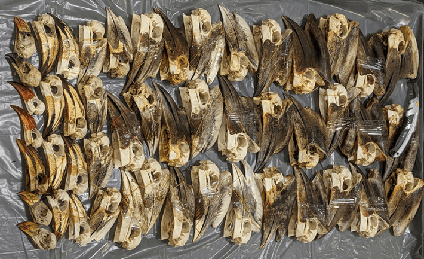

In October of 2023, a shipment of 45 hornbill skulls from Cameroon in Africa was seized by United States Fish and Wildlife Service officials at an airport in New York City. The skulls were shorn of feathers, the eye sockets bare, the long beaks stacked together in rows. Hornbills are a family of tropical birds with bulbous bills (think Zazu, from the Lion King), some of which sport horn-like features known as casques. The shipment was part of a burgeoning new trade in hornbill skulls from Africa.
“I wasn’t aware there was a trade coming into the States—that was shocking,” says Lucy Kemp, co-chair at the IUCN Hornbill Specialist Group and the director of the Mabula Ground-Hornbill Project in South Africa.
Hornbills have been traded in East Asia for more than 1,000 years. Some species, such as the helmeted hornbill, have very large and dense ivory-like casques that are carved into jewelry and other ornaments, making them especially popular targets of traffickers. But unsustainable hunting practices over the past century led to a precipitous decline in hornbill populations, and in 1992, almost all Asian species of hornbill were protected under the Convention on International Trade in Endangered Species of Wild Fauna and Flora (CITES), an organization that regulates the international wildlife trade.
“Those forests have no hornbills left now.”
In a new paper, Kemp and her colleagues suggest that granting protection of Asian species has shifted trafficking focus onto their African relatives, similar to the way banning trade in pangolins from Asia in 2000 led to a surge in poaching in Africa. It’s a dynamic that has been repeated for a number of different species in Africa after their cousins in Asia get protection from CITES, the authors note in their research. Though 32 species of hornbills reside in African forests, woodlands, savannahs, and grasslands—representing half of all hornbill diversity—thus far, none of the African species have received protection.
The research team analyzed data from the U.S. Fish and Wildlife Service on hornbill head seizure, as well as social media posts advertising hornbills—live or in parts—for sale. The analysis found that at least 2,552 hornbills were traded in the U.S. between 1999 and 2024, with trade growing an average 3 percent per year. And 95 percent of these hornbills were African species. Social media analysis, meanwhile, revealed a market for live hornbills that are captured in Africa and sold as pets in Asia.

TRADE OFF: Protecting Asian Hornbill species seems to have led poachers to go after African species instead. Pictured here, a shipment of 45 hornbill skulls from Cameroon seized at JFK Airport in 2023. Photo from Tinsmann, J., et al. Biological Conservation (2025).
The growth of the African hornbill market is likely to be relatively new—interviews with hunters in Cameroon reveal that the market has proliferated in the last six years, with 91 percent of skulls going to foreign buyers. “In Africa there’s always been some trade in heads, but it’s always been sort of a byproduct of the bushmeat trade,” says Kemp. Harvesting wasn’t happening at a scale that conservationists were concerned about. Now, traders are traveling to villages to specifically source hornbill heads to supply a foreign demand. According to a 2024 study, hunters in Cameroon are paid just over $5 on average per head, while they are sold to online buyers in Europe for a median of $158. One hunter recalled receiving an order for 150 skulls.
“It’s led to absolute decimation,” says Kemp. “We have some colleagues doing forest surveys—those forests have no hornbills left now.” Many species of hornbill are long-lived and have few offspring, so they are especially vulnerable to being wiped out by hunting pressures, Kemp explains. For example, over 100 yellow-casqued hornbills are imported to the U.S. each year, while fewer than 10,000 of these birds likely remain in the wild.
Aparajita Datta, a hornbill specialist at the Nature Conservation Foundation who was not involved in the study, says she was surprised to learn about this new and prolific market in hornbill skulls. “One of the critical things for me is investigating why and where this started,” she says. “Is it just because it’s an oddity and bizarre-looking? Is it just a talking point for people”
In the meantime, Kemp is calling on CITES to list large, forested hornbills from Africa, with more species to hopefully follow. A listing in CITES would draw attention to the plight of the hornbills and require countries to collect data on the trade.
She just hopes such efforts haven’t come too late. 
Lead image: Vitezslav Halamka / Shutterstock